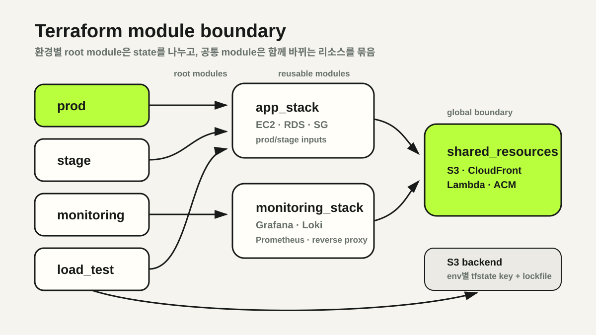

동작하지만 재현할 수 없는 인프라
초기 AWS 환경은 콘솔에서 EC2와 Security Group을 만들고, 서버에 접속해 Docker와 Nginx를 설정하는 방식이었습니다. 서비스는 동작했지만 현재 구성이 왜 그렇게 되었는지, 다른 환경에 같은 구성을 만들려면 무엇이 필요한지 한눈에 알기 어려웠습니다.
운영 이슈가 생길 때마다 콘솔의 현재 값과 서버 내부 파일, 팀원의 기억을 함께 확인해야 했습니다. stage와 prod가 비슷해 보여도 작은 설정 차이가 누적됐고, 변경 전후를 PR에서 검토할 수도 없었습니다.
명령 모음보다 선언적 상태
AWS CLI 스크립트도 반복 작업을 줄일 수 있지만 이미 존재하는 리소스와 원하는 상태의 차이를 지속적으로 관리하기 어렵습니다. Terraform은 리소스 의존성을 그래프로 계산하고, plan에서 변경 범위를 먼저 보여준다는 점이 요구사항과 맞았습니다.
- 현재 코드와 실제 리소스의 차이를 plan에서 확인
- EC2·RDS·Security Group·S3·Lambda의 의존 순서 계산
- Git 변경 이력과 PR을 통한 인프라 의사결정 추적
- 공통 모듈과 환경별 입력값을 통한 중복 감소
목표는 모든 운영 명령을 Terraform 안에 넣는 것이 아니라, 수명주기와 의존성을 관리해야 하는 리소스를 선언적 상태로 옮기는 것이었습니다.
환경별 root module과 state 분리
prod, stage, monitoring, load_test, global을 각각 독립된 root module로 나눴습니다. 모든 환경을 하나의 거대한 state에 넣으면 작은 변경도 전체 인프라의 blast radius를 넓히기 때문입니다.
environment/
├── prod/
├── stage/
├── monitoring/
├── load_test/
└── global/state는 암호화된 S3 backend에 환경별 key로 분리하고 lockfile을 사용했습니다.
backend "s3" {
bucket = "…-tfstate"
key = "env/prod/terraform.tfstate"
use_lockfile = true
encrypt = true
}이 구조에서는 monitoring 변경이 prod state를 잠그지 않고, load_test 환경은 독립적으로 생성·삭제할 수 있습니다. state 경계가 곧 변경 책임과 장애 영향 범위의 경계가 됐습니다.
변경 이유에 따른 모듈 경계
환경 디렉터리가 “어디에 적용하는가”를 표현한다면 모듈은 “무엇이 함께 바뀌는가”를 표현하도록 나눴습니다.
app_stack— prod·stage가 공유하는 EC2, RDS, Security Group과 서버 초기화monitoring_stack— Grafana·Loki·Prometheus 서버와 접근 경로shared_resources— 환경을 가로질러 공유하는 S3, CloudFront, Lambda, ACM
prod와 stage는 같은 app_stack을 사용하되 인스턴스 크기, ingress 규칙, 도메인과 RDS 설정을 입력값으로 분리했습니다. 복사된 리소스 정의가 서로 다른 방향으로 변하는 drift를 줄이기 위한 구조입니다.

모니터링 환경부터 점진적 전환
첫 전환 대상은 Grafana, Loki, Prometheus 기반 모니터링 서버였습니다. EC2, Security Group, Nginx reverse proxy 구성이 수동 설정에 의존했지만 애플리케이션 데이터 경로와는 분리되어 있어 Terraform 도입을 검증하기 좋은 경계였습니다.
이후 prod·stage의 공통 애플리케이션 스택과 S3·Lambda 같은 공유 리소스로 범위를 확장했습니다. 처음부터 모든 리소스를 한 번에 import하기보다 독립된 환경에서 module과 state 운영 방식을 검증한 뒤 넓혔습니다.
서버 내부 설정은 두 단계로 나눴습니다. Docker 같은 최초 부팅 작업은 cloud-init으로 처리하고, Nginx·관측 에이전트 설정은 템플릿 hash 변경을 감지해 SSM RunCommand로 반영했습니다. 설정 하나 때문에 EC2가 교체되지 않도록 인스턴스 생명주기와 구성 변경을 분리했습니다.
IaC 이후에도 남는 운영 판단
Terraform 도입이 수동 작업을 완전히 없애지는 않았습니다. 기존 리소스 import, state와 실제 리소스의 drift, provider 업그레이드, 삭제 가능한 환경과 보호해야 할 환경의 정책은 계속 관리해야 합니다.
- secret 값은 코드가 아닌 Parameter Store에서 조회
plan결과를 적용 전 검토하는 배포 규칙 필요ignore_changes는 책임 분리와 drift 은폐 사이의 판단 필요- SSM과 local-exec 같은 명령형 경계는 실패·timeout 처리 필요
Terraform의 가장 큰 효과는 “버튼을 누르지 않게 된 것”이 아니라 인프라 변경을 설명하고 검토할 수 있게 된 것이었습니다. 재현 가능성과 변경 추적은 코드 작성만으로 생기지 않고, state와 모듈 경계를 함께 설계할 때 만들어졌습니다.
NEXT POST경로 계산 API의 4 Worker 선택 기준 →